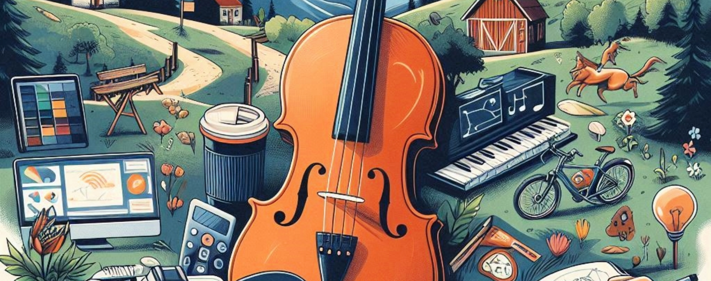
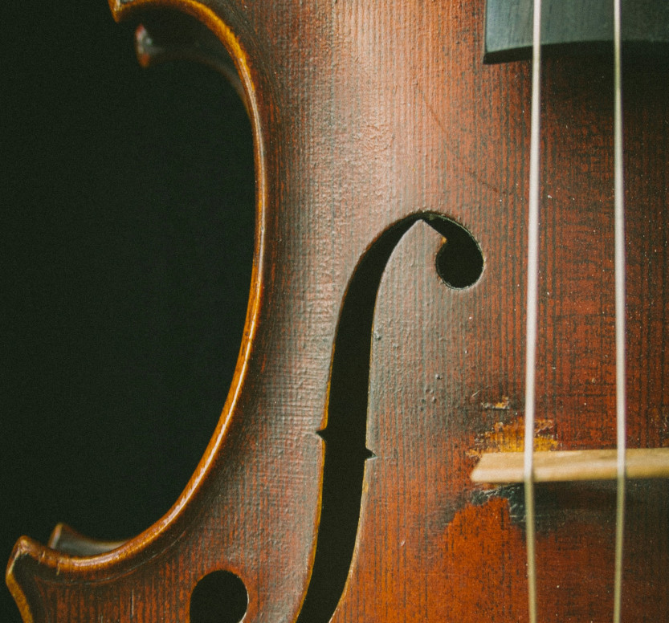

I have been playing viola for about 10 years now. I started playing in 6th grade and have been playing ever since. I have played in many different orchestras growing up both in school and through a program called the tacoma youth symphony and have played in many different concerts and venues over those years. I have participated in solo and ensemble competitions with friends and family and worked really hard to develop those skills.
Hobbies
Not everything I like to do involves computers. I also enjoy playing video games, reading books, going hiking, playing board games, and playing the piano and the viola.
Viola

Hiking
Backpacking was something that was a constant throughout my life. I have been on many trips but I would say my favorite two spots would have to be a section of the pacific crest trail in washington state and hiking the great chinese wall in montana.